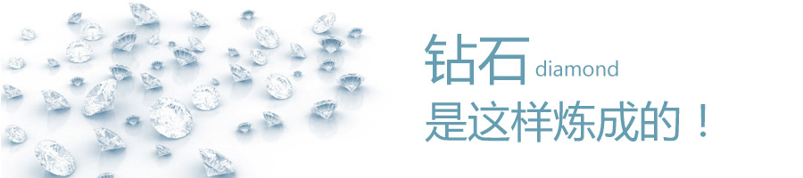
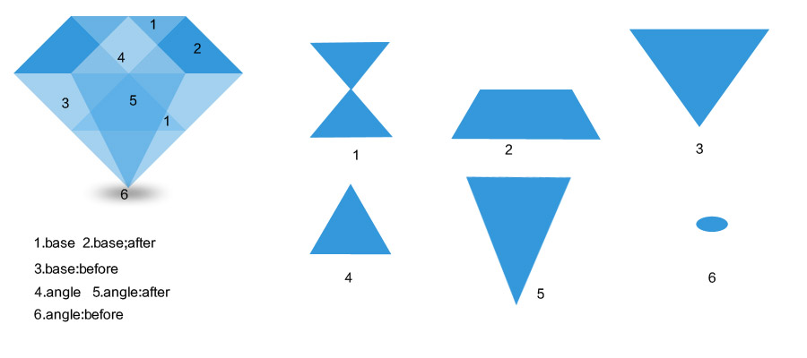

要用css3搭建钻石，首先要了解钻石是由什么图案搭建而成，如下图所示，主要由6个图案重叠拼接而成,同时主要运用了border的属性

接下来，我们主要了解下这个demo里面主要用到的属性border,如一个容器宽高为0，而border的宽为大数字，那么它形成的是一个正方形，并且每一个边为一个等边三角形，同时如对他进行定位，则top，left的起始点为中心点；
下面的是结构代码：
<div class="base">
<div class="angle"></div>
</div>非常简单，只有两个div，如何用两个div绘制出不一样的图案呢，首先我们通过一个钻石的平面图可以看出，一个钻石是由六个图案组成的，css3中提供了一个before和after的属性，所以两个div就可以绘制出三个不同的形状，详情见上图
下面的是css代码：
.base {
border:64px solid;
border-color: #67b2e4 transparent rgba(105,185,238,.50) transparent;
height: 0;
margin: 20% auto;
position: relative;
width: 0;
}
/*base是画了宽高为0，宽度为64px，同时将左右两边设置为透明的一个正方形*/
.base:after,
.base:before,
.angle,
.angle:after,
.angle:before,
.shade{
height:0;
position:absolute;
width:0;
}
/*将伪类元素的content置空*/
.base:after,
.base:before,
.angle:after,
.angle:before{
content:"";
z-index:-1;
}
.base:after{
border-bottom:64px solid #3498DB;
border-left:64px solid transparent;
border-right:64px solid transparent;
left:-128px;
bottom:0;
width:128px;
}
/*base:after是画了一个宽为128px的，同时border宽度为64px的梯形，要注意的是border只有宽高都设置为0，
才会是三角形，否则都是梯形*/
.base:before{
border:128px solid;
border-color:#A3D1EF transparent transparent;
left:-128px;
}
/*base：before是画了一个64px的上边border，同时对他进行定位*/
.angle{
border:64px solid;
border-color:transparent transparent rgba(255,255,255,.40);
left:-64px;
top:-128px;
z-index:0;
}
/*angle画了一个边为64px下边，对它进行定位*/
.angle:after{
border:128px solid;
border-color:rgba(54,156,224,.50) transparent transparent;
left:-128px;
top:64px;
-webkit-transform:scaleX(.5);
}
/*angle:after画了一个边为128px的上边，并且对其进行缩放*/
.angle:before{
background-color:#000;
border-radius:50%;
-webkit-filter:blur(12px);
height:12px;
left:-32px;
top:192px;
-webkit-transform:scaleY(.5);
width:64px;
z-index:-1;
}
/*angle:before是画了一个椭圆，对齐进行y轴的缩放以及滤镜的模糊效果*/